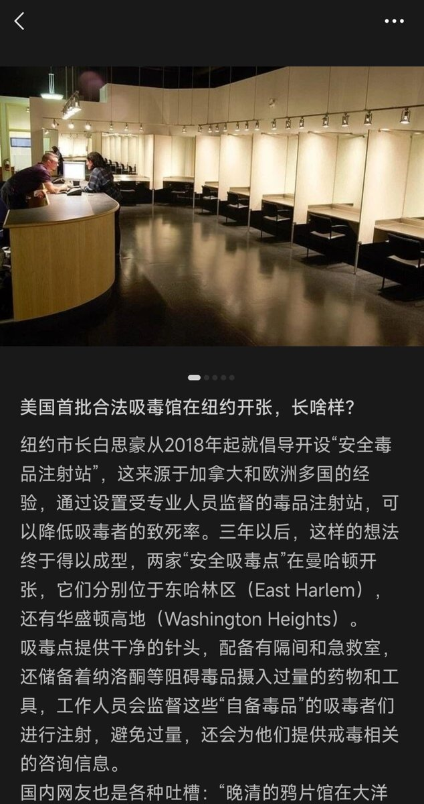

Nutilité
@Prechaska
@drug_artist2 应该不能算是“合法吸毒”，毕竟在美国无授权持有列管物质还是违法的，这更接近欧洲那种以减害为目的建立的drug consumption rooms。看起来像是美国在合成阿片危机中发现单纯通过刑事禁止不足以应对公共卫生现实，不得不承认毒品问题同样需要作为公共卫生问题被解决，于是引入用于减害的公共卫生设施

沐雨
@drug_artist2
首批合法吸毒馆在纽约开张 https://t.co/7stIEN1nSE